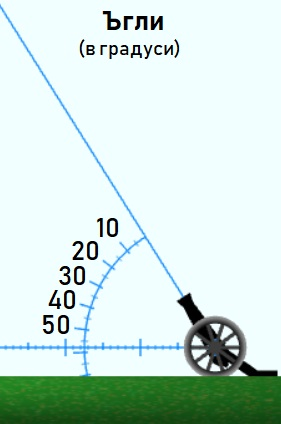
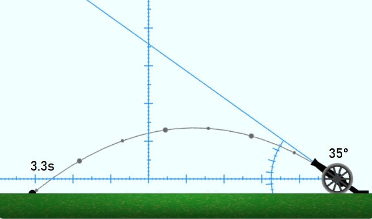

• Балистика •
Балистиката е дял от Физиката, който се занимава с движението на тяло, което е хвърлено в пространството. В най-опростеният случай се предполага, че: (a) действа само силата на гравитацията; (б) няма въздушно съпротивление или реактивна тяга; и (в) повърхността е равна.
Ще разгледаме движението на гюле, изстреляно от топ. Траекторията и движението на гюлето се описват с формули с три параметъра:
- v – начална скорост
- g – земно ускорение;
- θ – ъгъл на изстрелване.
Траекторията е парабола, като най-високата точка се достига по средата на полета на гюлето (това важи само ако изстрелът и падането на гюлето е на едно и също ниво).
• Балистичен топ •
В този урок ще разгледаме пример с балистичен топ. При него два от параметрите са фиксирани, а един е ограничен.
- начална скорост v = 28 м/с;
- земно ускорение g = 9.81 м/с²;
- ъгъл на изстрелване θ ∈ [0°,90°].
Общата формула за описание на траекторията като функция на времето отчита, че хоризонталната компонента на скоростта е константна и не зависи от земното ускорение:
x(t) = vt.cos(θ)
и
y(t) = vt.sin(θ) – gt²/2
Освен това при измерванията, ще приемаме, че нивото на изстрел и на попадение е едно и също. Затова "попадението" няма да е на нивото на земята, а на нивото на началния изстрел на топа.
Дължината на полета D(θ) зависи само от ъгъла на изстрелване и може да се изчисли по следния начин:
D(θ) = v².sin(2θ)/g
Продължителността на полета T(θ) може да се изчисли чрез:
T(θ) = 2v.sin(θ)/g
За да се намери максималната височина се използва, че тя се постига по средата на полета, т.е. при t = v.sin(θ)/g.
H(θ) = y[T(θ)/2] = v²sin²(θ)/(2g)
• Полеви експеримент •
За извършване на полеви експерименти първо се определя посока на изстрел (с придвижване на курсора на мишката по графичното поле) и после се кликва за възпроизвеждане на самия изстрел. След като гюлето падне, с бутона [Нов изстрел] се започва избор на нова цел. До тогава ориентацията на топа е "заключена" и последната траектория се вижда в графичното поле.
С бутона [Измерване] се показва ъгломер, хоризонтална и вертикална линии с деления и "възли" по траекторията на гюлето.

Главните деленията на ъгломера са през 10°, а малките – през 5°. Деленията на линиите са през 10 м, с междинни деления на всеки 5 м и малки деления на ниво метър. Големите възли по траекторията на гюлето са през 1 s спрямо началото на изстрела, а малките са на половин секунда.
Нов изстрел
Измерване
Инструкции
• Задачи •
Във всички задачи гюлето се изстрелва с една и съща скорост – 28 м/с. При настройване на първоначалните условия на изстрел и при измерване на резултатите използвайте наличните линийки с деления и ъгломер.
Покажи решението
Задача №1. Колко далеч и колко високо ще излети гюле, ако се изстреля на: (а) 30°, (б) 60° и (в) 90°. Представете резултатите измерени "на око" и сравнете с изчислените по формула резултати.
Решение. Превключваме на режим "Измерване", нагласяваме посоката на съответния градус и произвеждаме изстрел. С вертикалната линия измерваме височината на полета, а с хоризонталната линия измерваме дължината на полета. Резултатите от измерванията и от изчисленията са показани в таблицата.
| 30° |
10 м |
69 м |
|
? |
? |
| 60° |
30 м |
69 м |
|
? |
? |
| 90° |
40 м |
0 м |
|
? |
? |
Изчисли сега
Покажи решението
Задача №2. Топът е прицелен на 30 метра вертикално над цел, която е на 50 метра разстояние. Къде ще падне гюлето: пред целта, в целта или зад целта?
Решение. Преместваме вертикалната линия на 50-тия метър по хоризанталната. За правилно насочване на топа кликваме на 30-тия метър по вертикалната линия. Наблюдаваната траектория показва, че гюлето ще падне на около 20 метра зад целта.
За проверка изчисляваме ъгъла от tg(θ) = 30/50, откъдето получаваме θ ≈ 30.96°. Дължината на полета получаваме чрез формула 70.52 метра, т.е. 20.52 метра зад целта, с което се потвърждава емпирично измереният резултат.
Покажи решението
Задача №3. Установете експериментално при какъв ъгъл се постига най-голяма далекобойност.
Решение. Очакваме далекобойността да зависи плавно от ъгъла, понеже траекторията е парабола. Затова първо експериментираме с ъгли през 10°: 0°, 10°, 20°, ... 90°. Резултатите са показани в следната таблица:
Разстояние
(в метри) |
0 |
27 |
51 |
69 |
79 |
79 |
69 |
51 |
27 |
0 |
От симетричността на параболата на траекторията и от данните в таблицата може да се предположи, че максималната далекобойност се постига при 45°.
Покажи решението
Задача №4. Проверете експериментално за някакъв ъгъл α∈[5°,40°] дали: (а) гюлето ще падне на едно и също разстояние при ъгли на изстрела 45°±α; и (б) дали за полетът е за едно и също време. Обосновете с формула резултата.
Решение. Избираме α=10°. При ъгли α=35° и α=55° гюлето ще падне на едно и също разстояние от около 75 метра:
От формулата за разстоянието и от четността на cos(x) получаваме, че при 45°+α и 45°–α разстоянието е едно и също:
D(45°–α) = v²sin(90°–2α)/g = v²cos(2α)/g
и
D(45°+α) = v²sin(90°+2α)/g = v²cos(2α)/g
При измерване на времето на полета при ъгли α=35° и α=55° се получават различни времена, съответно, 3.3 секунди и 5.75 секунди. Наблюдението показва, че при по-големия ъгъл се получава и по-дълъг по време полет.

От формулата за време на полета и от монотонното растене на sin(x) в ъгловия интервал x∈[0°,90°] получаваме, че за полет при ъгъл 45°+α ще е нужно повече време, отколкото за полет при ъгъл 45°–α:
T(45°–α) = v.sin(45°–α)/g < v.sin(45°+α)/g = T(45°+α)
защото при 45°±α ∈ [0°,90°]:
sin(45°–α) < sin(45°+α)
защото:
45°–α < 45°+α